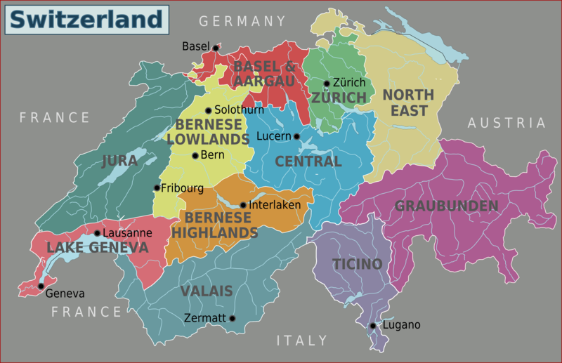

GEOGRAFIA
Oficialmente a Confederação Suíça é uma república federal composta por 26 estados, chamados de cantões, com a cidade de Berna como a sede das autoridades federais.
O país está situado na Europa Central, fazendo fronteira com a Alemanha a norte, com a França a oeste, com Itália a sul e com a Áustria e o principado de Liechtenstein a leste.
A Suíça é um país sem costa marítima cujo território é dividido geograficamente entre o Jura,
o Planalto Suíço e os Alpes, somando uma área de 41 285 km². A população suíça é de aproximadamente 8,5 milhões de habitantes e concentra-se principalmente no planalto,
onde estão localizadas as maiores cidades do país. Entre elas estão as duas cidades globais e centros económicos de Zurique e Genebra.
- Suíça é um dos países mais ricos do mundo relativamente ao PIB per capita calculado em 75 835 dólares americanos em 2011.
Zurique e Genebra foram classificadas como as cidades com melhor qualidade de vida no mundo,
estando em segundo e terceiro lugar respectivamente e a Suíça como o melhor país para nascer em 2013.
- Os Alpes Suíços fazem parte de uma cadeia montanhosa que atravessa desde o Sul da Europa até à Europa Central.
Algumas das mais importantes passagens estão localizadas nos Alpes suíço.
Têm uma altitude média de 1 700 metros e cobre dois terços da totalidade da área da Suíça. Entre os alpes suíços estão 48 montanhas que têm pelo menos 4 mil metros de altitude.
